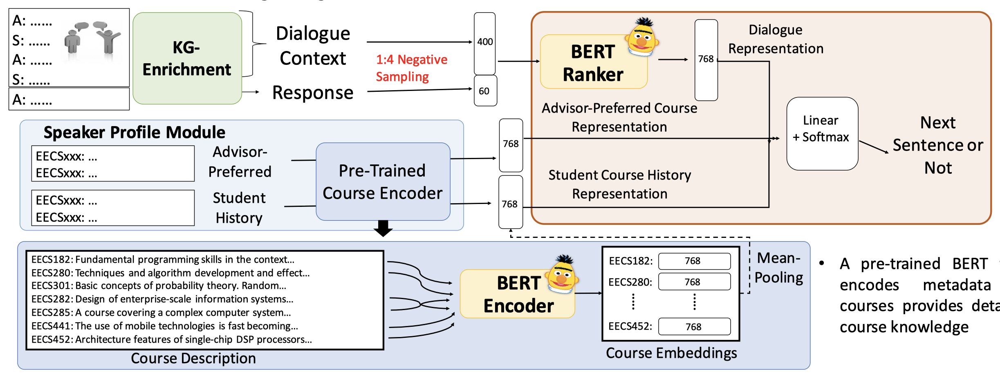
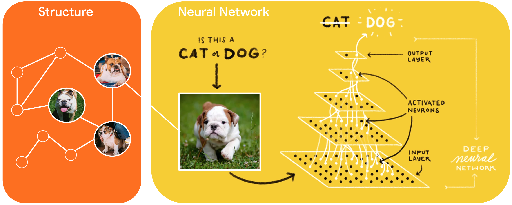
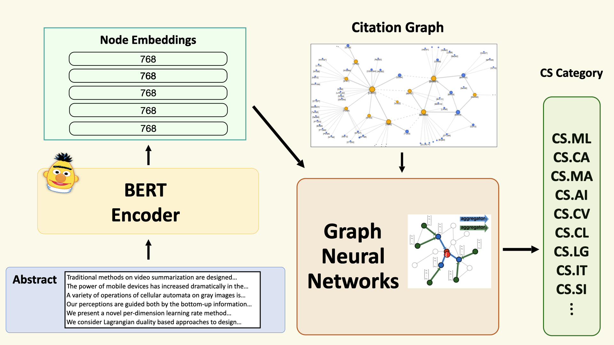
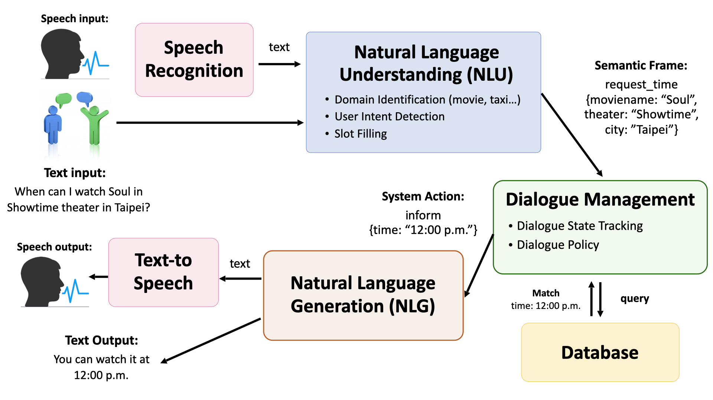
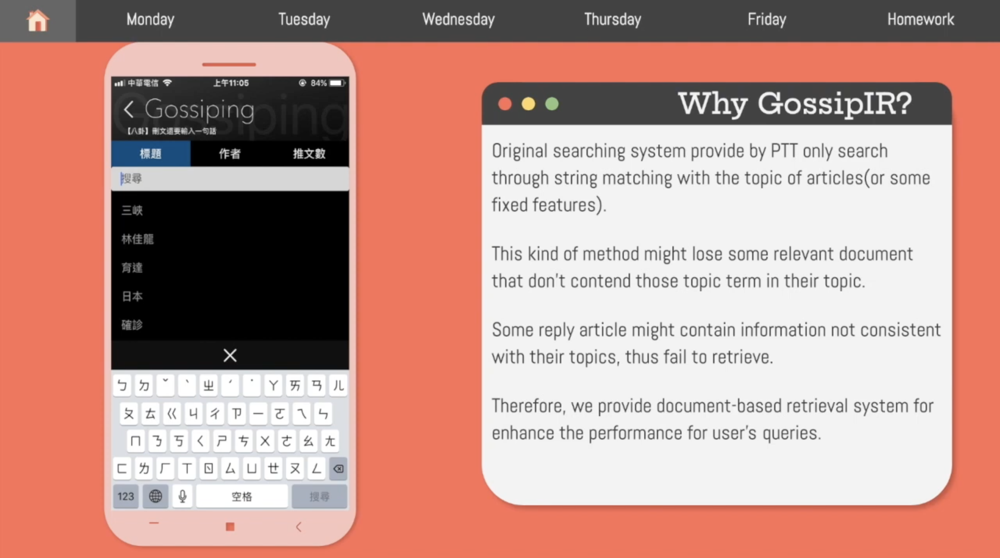
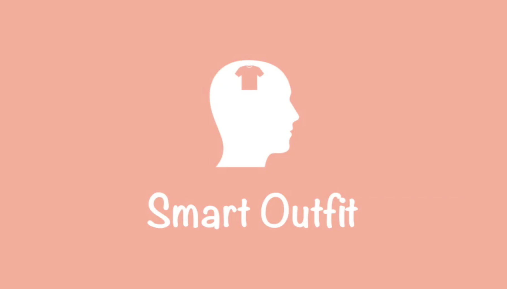

Biography
Timeline & Experiences
2020 July. - 2020 Aug.
Data Scientist Intern @ Cathay Life Insurance
Worked on Fraud Detection Projects for Data Analysis Team.
• Graph Features to find relationships between clients and salesmen
• Desicion Tree Methods on fraud detection
• Neo4j Graph Database
• Desicion Tree Methods on fraud detection
• Neo4j Graph Database
Supervisor: Yu-Kai Huang
2020 Feb. - 2020 June
Research Assistant @ NTU AI & Robotics Center
Center for Artificial Intelligence and Advanced Robotics
Focused on building interactive system on Covid-19 news.
Focused on building interactive system on Covid-19 news.
• Statistical / Neural Machine Translation
• Elastic Search / Google Search API
• Elastic Search / Google Search API
Supervisor: Prof.
Zhao-Ming Gao
2019 July - 2019 Aug.
AI Engineering Intern @ IBM
Implemented and improved computer vision models.
• MobileNet-based models for Image Classification
• Knowledge Distillation methods to shink the model size
• Mask R-CNN, Faster R-CNN for Object Detection
• Knowledge Distillation methods to shink the model size
• Mask R-CNN, Faster R-CNN for Object Detection
Supervisor: Jerry
Wang
2018 Sep. - 2020 June
Undergraduate Researcher @ NTU Miulab
Machince Intelligence & Understanding Laboratory
Researched on different NLP problems:
Researched on different NLP problems:
• Dialogue Systems
• Natural Language Generation
• Question Answering
• Natural Language Generation
• Question Answering
Supervisor: Prof. Yun-Nung (Vivian)
Chen
2016 Sep. - 2021 Jan.
Undergraduate student @ NTU
B.Sc. in Computing Science
1997
He was Born
Publications

Leveraging Speaker Profile and Knowledge Enrichment for End-to-End Advising
Reponse Rankings
Retrieval-based dialogue modeling has drawn a lot of attention due to its practical usage.
This paper focuses on using BERT-based model to extract
speaker profile information and enriching the entity-related knowledge in dialogues to
better predict the next response given the dialogue contexts.
DSTC8 @ AAAI 2020
(Poster)
New York, USA
Honors & Awards
- 1st Prize with TWD $200,000 (out of 469 teams) / AICup – Thesis Tagging Competition / 2019 [ code ]
- 1st Prize with TWD $160,000 (out of 244 teams) / Cathay Big Data Competition / 2019 [ slides ]
- 4th place with Intel Neural Compute Stick 2 (out of 148 teams) / AICup Course Challenge / 2021 [ code ]
- 8th place wtih TWD $10,000 (out of 421 teams) / AICup – Vocal Transcription Competition / 2020 [ code ]
- Ranked 31th (out of 823 teams) / Shopee Code League - Product Detection / 2020 [ code ]
- Honorable Mention with TWD $5,000 / NTU CSIE Special Topic Research Exhibition / 2019
Machine Learning / Deep Learning
Selected Projects

Graph Neural Networks(GNN) in Tensorflow
The project aims to implement state-of-the-art GNN models.
It have already contributed to
Neural Structure Learning, Tensorflow.
There are three GNN models: Graph Convolution Network(GCN),
Graph Attention Network(GAT),
Graph Isomorphism Network(GIN) in the repository now.
It also supports the sparse tensor version of GNN models to increase efficieny
and accuracy.

Fine-tuned BERT Encoder & GNN for Node Classification
BERT and GNN are the most popular neural networks models
in NLP and graph dataset. Therefore, we want to bring the advantages in BERT to the
citation network, and evaluate that how much improvement can BERT help GNN models work.
We implemented our method on ogbn-arxiv dataset and the result
beats the 1st place in
Open Graph Benchmark Leaderboard!

Open Source Task-Oriented Dialog Systems
Dialogue systems are omnipresent in our lives, but few open-source dialogue system
architecture for developers can use. Therefore, this project aims to design a
flexible dialogue system architecture for developers to apply,
and this project specifically focuses on the reservation dialogue systems.

PTT Gossip Browser (2020 Spring IR Final Project)
Everyone loves gossip. But, the information in
PTT Gossiping
is quite messy. The project aims to to build a retrieval system
for news in PTT Gossiping by Vector Space Model(VSM).
We also implemented the recommendation system and website interface to be more
convenience
for potential users.

Smart Outfit (2019 Spring HCI Final Project)
Choosing what to wear is difficult for everyone.
The project focused on how to design a interface which can recommend
suitable outfits for potential users. We developed an ios app to record
users’ preferred clothes and recommend users their best outfits
based on the weather information and the latest trend.